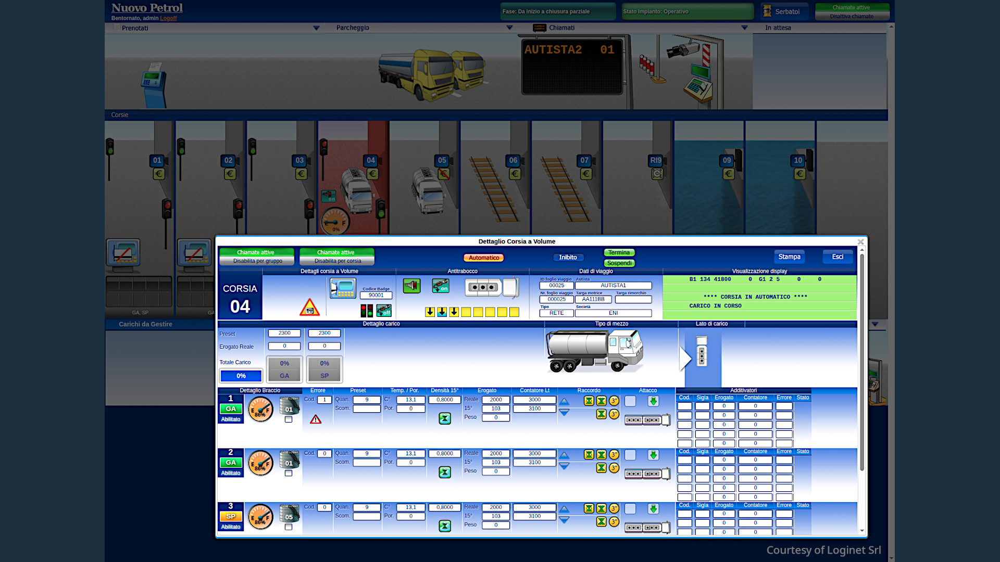

Others & experiments
Real-world ML systems — computer vision, document AI, LLM agents integrated with existing processes. From first experiment to something that runs.
Get in touch →Detection, analysis and measurement of objects in conditions that aren't controlled — worn documents, dense shelves, variable lighting, partial occlusion. Problems where off-the-shelf models fail and the solution requires custom training: from data curation to architecture choices to deployment.
LLM agents that reason across ambiguous input, operate within domain-specific constraints, and produce output your existing systems can use — structured data, code, API calls, hardware commands. The interesting engineering is in the integration: custom DSLs, tool design, feedback loops that make unreliable output trustworthy.
I work with teams to find where AI actually fits in their specific process — experiments, focused prototypes, realistic evaluation. When the direction is clear, I add the AI layer to your existing systems: ERPs, cameras, devices — without rewriting what works.
I've shipped systems that have been running for 20 years. I can get to a working prototype quickly, and I know what it takes to keep it running after that.
I started writing software before the web existed and have been doing machine learning seriously since 2016 — which means I understand both why SIFT still matters, when XGBoost on well-engineered features beats a neural network, and when a diffusion model is the right tool. My background is in systems that have to work under real-world conditions: noisy data, legal constraints, hardware that misbehaves, users who are not data scientists.
Recent focus: computer vision for complex detection problems, document AI, and LLM agents. I work primarily with the open-source ecosystem — from academic paper implementations to recent research repositories. I build domain-specific tooling at the intersection of classical CV and modern deep learning and LLMs where neither alone is sufficient.
I work independently as a consultant on defined engagements. Milan-based, comfortable working remotely across Europe.
Two separate systems, combined into a complete identity verification service. The first: a custom OCR pipeline built from scratch, handling paper and electronic identity documents, passports and driving licences across twenty European and non-European countries. The OCR engine is based on a custom TensorFlow model and an open-source LSTM, both custom trained. It handles field localisation, data extraction, MRZ parsing and text cleanup across documents with widely varying layouts, security features and print quality. The second: a face recognition and liveness detection system, independently evaluated by NIST. Together they form an end-to-end verification flow deployed at scale for a major digital identity authority and its enterprise clients. Both have been in continuous production for over eight years.
Production — 8+ yearsAI assistant for Siemens TIA Portal that generates ladder diagram networks from natural language via a custom DSL, with bidirectional XML import/export. Built on a Claude agent SDK with domain-specific tooling and Siemens Openness API integration.
BetaPWA for automated book inventory from a single shelf photo. Detects 200+ densely packed, tilted, partially occluded spines combining oriented bounding box detection (for exact item tracking), with LLM-based OCR to handle ambiguous OCR output semantically. No installation required.
In developmentAI-assisted stylisation of video game level mockups. Conditioned Stable Diffusion using depth maps, edge maps, textual descriptions and style images to produce visually coherent decorations of 3D renders — maintaining geometric constraints while transforming the visual surface.
DeliveredTeam orchestration for AI-driven software development implementing an XP-inspired process (XP4Agent) over a Matrix/OpenClaw backbone. Coordinates specialised agents for planning, implementation, review and testing with structured handoffs.
ResearchCustom-built tool for pose-driven video synthesis. Indexes skeletal keypoints across 10M+ video frames, with a query interface for pose similarity search. Supports custom joint selection, per-joint weighting and grid-search offset to surface matches with slight spatial displacement.
ResearchEnd-to-end RLHF pipeline for domain-adapted language models built on TRL and Unsloth with LLaMA-family base models. Preference dataset construction, reward model training and PPO fine-tuning — optimised for single-GPU with quantisation-aware LoRA.
Personal researchRetinaNet/ArcFace-based pipeline for real-time face detection, metrics and demographic analytics at scale.

// Both articles written while building real systems — not as academic exercises.
Available for consulting on computer vision, document AI, LLM integration and ML systems. I work best when the problem is concrete and the stakes are real.
Milan-based. Remote engagements across Europe welcome.